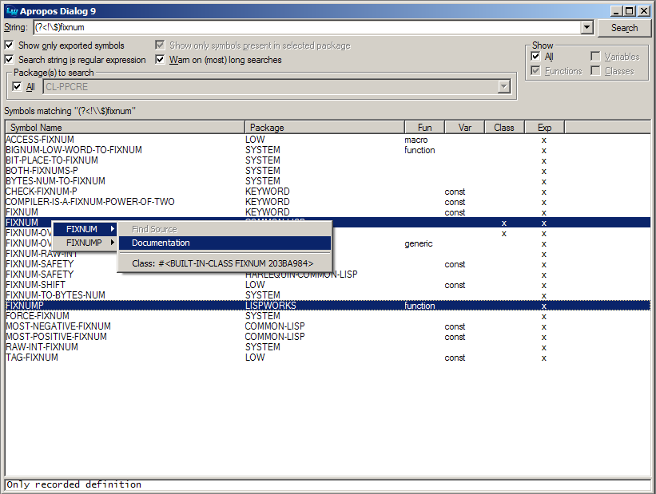
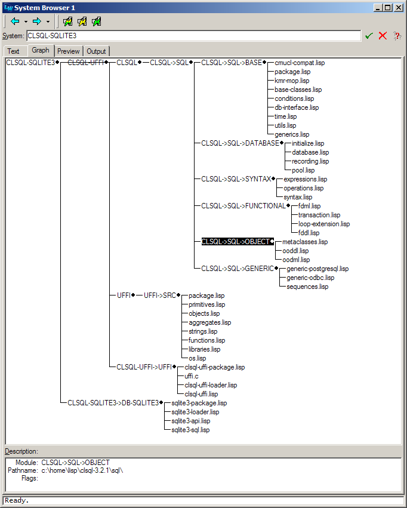

LW-ADD-ONS
Table of Contents
- 1 LW-ADD-ONS ASDF System Details
- 2 Compatibility with different LispWorks releases
- 3 Installation
- 4 Overview
- 5 Acknowledgements
[in package LW-ADD-ONS]
LW-ADD-ONS is a collection of small "enhancements" to
the LispWorks IDE that I
usually load from my initialization file. Most of this code is
intended to make LispWorks behave similar
to SLIME and GNU Emacs.
The details of what's included are outlined below. (Whether one thinks these are enhancements or rather distractions is of course a matter of taste.)
The code has been used and tested on LispWorks for Windows mostly (I don't use the IDE on Linux), but I hear there are also some Mac hackers using it successfully. For an overview of which LispWorks releases are supported, see Compatibility with different LispWorks releases section.
It comes with a BSD-style license so you can basically do with it whatever you want.
1 LW-ADD-ONS ASDF System Details
- Version: 0.10.3
- Description: A bunch of extensions for LispWorks IDE, originally written by Edmund Weitz.
- Licence: BSD-2-Clause
- Author: Edmund Weitz
- Maintainer: Alexander Artemenko
- Homepage: https://40ants.com/lw-add-ons
- Bug tracker: https://github.com/40ants/lw-add-ons/issues
2 Compatibility with different LispWorks releases
LW-ADD-ONS was originally (in 2005) conceived and written for
LispWorks 4.4.5/4.4.6 (and it will likely not work with older
versions). Since then, the fine LispWorks hackers have added several
new features to their IDE which rendered some parts of LW-ADD-ONS
obsolete. As I usually use the latest LispWorks version, you can
expect LW-ADD-ONS to be adapted to it pretty soon after its release.
This might include dropping features which are now superseded by
capabilities offered by the LispWorks IDE itself.
The newest LispWorks release which is currently supported is 7.0.
Support for older LispWorks versions might at some point disappear.
Keep your old LW-ADD-ONS tarballs if you plan on sticking with a
certain LispWorks release.
3 Installation
To use LW-ADD-ONS you need LW-DOC and a recent version of
LispWorks:
http://weitz.de/lw-doc/ http://www.lispworks.com/
Use of Quicklisp is recommended together with LispWorks distribution.
If you already have a LispWorks init file, append the included file
.lispworks to it, otherwise instruct LispWorks to use this file as
your initialization file. In that file, modify the special variables
*ASDF-BASE-DIRS*, and *WORKING-DIR* to fit your local settings.
Specifically, make sure that LW-ADD-ONS, LW-DOC and their supporting
libraries can be found via *ASDF-BASE-DIRS*.
Download the HTML page http://www.lisp.org/mop/dictionary.html and
store it locally. At the end of the init file (after LW-ADD-ONS has
been loaded) set the value of LW-ADD-ONS:*MOP-PAGE* to the pathname of
the saved HTML file. (There are some other special variables that can
be used to modfiy the behaviour of LW-ADD-ONS. See the documentation
for details.)
You should now be able to use LW-ADD-ONS by simply starting LispWorks.
Note: The Personal Edition of LispWorks doesn't support the automatic loading of initialization files. You'll have to use some kind of workaround.
4 Overview
Here's an overview of what's currently in LW-ADD-ONS. If you want
more details you got to look at the source code which should be
reasonably documented.
4.1 Symbol Completion
Symbol completion is divided into two editor commands. The "outer" command is
Indent And Complete Symbol which tries to indent the current line
and only performs completion if the line hasn't changed. I have bound this command
to the TAB key in my init file, so I can use TAB for both indentation and completion.
(In LispWorks 7.0 the editor command Indent Selection or Complete Symbol
was introduced, so you probably no longer need my workaround.)
The "inner" command is Complete Symbol Without Dialog which is intended to work
more or less like SLIME's SLIME-COMPLETE-SYMBOL* function, i.e. you can type, e.g., m-v-b
and it'll be expanded to MULTIPLE-VALUE-BIND. If there's more than one possible completion,
then the command only performs completion up to the longest unambiguous prefix and shows
a list of (some of) the possible completions in the echo area. There's no GUI dialog popping
up because I think that's distracting.
Indent And Complete Symbol calls Complete Symbol Without Dialog on LispWorks
4.4.x and 5.0.x. In 5.1, however, the new command Abbreviated Complete Symbol was introduced
by LispWorks, so now you can decide which function should be used via the special
variable *USE-ABBREVIATED-COMPLETE-SYMBOL*.
If it can be determined that you're within a string then Indent And Complete Symbol
tries pathname completion instead. (This is not perfect, though, as it won't work if
the string contains spaces.)
If the symbol which is completed denotes a function without arguments, Complete Symbol Without Dialog
will automatically add a closing parenthesis. This can be customized through the variable
*INSERT-RIGHT-PARENTHESIS-IF-NO-ARGS*.
You can customize the behavior of Complete Symbol Without Dialog by changing
the value of the variable *COMPLETION-MATCH-FUNCTION*.
Note that for LispWorks 7.0 the default behavior had to be changed - see here.
[variable] *COMPLETION-MATCH-FUNCTION* COMPOUND-PREFIX-MATCH
The function used by "Complete Symbol Without Dialog" to check possible completions. Should be a designator for a function of two arguments and return true iff the second argument is a possible completion of the first one.
[variable] *USE-ABBREVIATED-COMPLETE-SYMBOL* NIL
Whether "Indent And Complete Symbol" should call "Abbreviated Complete Symbol" (only available in LispWorks 5.1 or higher) instead of "Complete Symbol Without Dialog".
[command] Indent And Complete Symbol
Indents the current line and performs symbol completion. First indents the line. If indenting doesn't change the line point is in, completes the symbol. If there's no symbol at the point, shows the arglist for the most recently enclosed macro or function.
[command] Complete Symbol Without Dialog
Completes the symbol before or around point. Doesn't pop up a
CAPIdialog window.
These two commands are coming with LispWorks >= 7.0:
[command] Indent Selection or Complete Symbol
Either indent the current selection/line or complete a symbol at the current point, according to where the point is in the line.
[command] Abbreviated Complete Symbol
Complete the symbol before the point, taking the string as abbreviation.
4.2 Information about the arguments of a function
The editor command Insert Space and Show Arglist which I've bound to the space
key inserts a space and shows the argument list of the nearest enclosing operator
in the echo area. If *SHOW-DOC-STRING-WHEN-SHOWING-ARGLIST* is true the documentation
string of the operator is also shown.
Note that this command is different from the one that's distributed as an example together with LispWorks.
[command] Insert Space and Show Arglist
Displays arglist of nearest enclosing operator in the echo area after inserting a space.
[variable] *SHOW-DOC-STRING-WHEN-SHOWING-ARGLIST* T
Whether the editor command
Insert Space and Show Arglistis supposed to show the documentation string as well.
4.3 Apropos dialog
There is an Apropos dialog (see picture above) that can be reached via
the LispWorks Tools menu or the Tools Apropos editor command (bound to C-c C-a):

The dialog should be mostly self-explanatory. Note that right-clicking on the results in the multi-column list panel (after selecting one or more items) pops up a menu with various options similar to other IDE tools. Double-clicking an item tries to find the corresponding source code or, failing that, the documentation.
Note that in LispWorks 5.0 a similar tool
was introduced and it is bound to C-c C-a shortcut.
[command] Tools Apropos
Shows Apropos Dialog.
4.4 Transient mark mode
The editor tries to emulate GNU Emacs' transient mark mode if you bind
the command Set Mark And Highlight to C-SPC and/or C-@.
This results in the marked region always being highlighted.
In LispWorks 7.1 standard Set Mark command works well in a transient mode
by default and you don't need to rebind C-SPC to Set Mark And Highlight.
[command] Set Mark And Highlight
Sets the mark and turns on highlighting. To be used as a replacement for the normal "Set Mark" command if you want something similar to `transient mark mode.'
4.5 Search and replace
The editor commands to find and replace strings are modified in such a way
that they only operate on the marked region if there is one.
Also, the effects of a Replace...
command can be undone with a single Undo
command. (The latter feature comes for free with LispWorks 5.1 and higher.)
In LispWorks 5.0 and earlier, the editor command
Continue Tags Search
and all commands (like, say, Edit Callers)
that make it applicable (see the LispWorks Editor User Guide)
push the current position of point onto a definitions stack before they move to a new position. You can walk
back through this "history" using the new editor command Pop Definitions Stack.
Note that in LispWorks 5.1 a new command Go Back was introduced, so the code
related to the definitions stack is disabled for 5.1 and higher.
- [command] Pop Definitions Stack
4.6 Online documentation
The editor command Meta Documentation (bound to F5 in the sample init file)
tries to find HTML documentation for the symbol at point and immediately
shows it using the default web browser. This applies to the
HyperSpec,
the LispWorks reference manuals,
the MOP (see *MOP-PAGE*), and some other
useful stuff, e.g. format strings like ~*,
reader macros like #x,
and loop clauses like loop:until.
Finally, HTML documentation for libraries like CL-PPCRE
or LW-ADD-ONS itself that have Hyperdoc
support will also be found.
TODO: Check how Hyperdoc works and maybe to support it in 40ANTS-DOC.
If the command is invoked with a prefix argument you are prompted for a symbol and completion is available.
Note that this command is similar although not identical to the
undocumented LispWorks command Function Documentation.
[command] Meta Documentation
Finds and displays documentation for the given symbol if it is supported by Hyperdoc or can be found in one of the online manuals (CLHS, LW, MOP). If point is on a symbol which is known to have documentation the page is immediately shown. Otherwise, or with a prefix argument, the user is queried for the symbol.
[variable] *MOP-PAGE* "c:/home/lisp/doc/mop/dictionary.html"
A pathname specifier denoting the location of the dictionary page from the
AMOPHTMLversion. The page is available online at http://www.lisp.org/mop/dictionary.htmlTODO: A link above does not work anymore. We need to find another source.
4.7 ASDF integration

If *TRANSLATE-ASDF-SYSTEMS* is set to a true value then ASDF system definitions
are automatically converted to Common Defsystem
definitions whenever you load or compile an ASDF system.
Note that ASDF is a lot more flexible than Common Defsystem and there's no hope to convert every conceivable ASDF system to an equivalent Common Defsystem system. The conversion is mainly intended to enable you to browse ASDF systems from the LispWorks IDE and use editor commands like System Search
and System Query Replace.
It seems to work in practice for a lot of open source ASDF systems that can be used with LispWorks.
Note that this has been rendered mostly obsolete due to a new feature in LispWorks 6.1 and has been disabled for LispWorks 7.
[variable] *TRANSLATE-ASDF-SYSTEMS* T
Whether
ASDFsystems should be automatically converted to LispWorks Common Defsystem systems.
[command] Load ASDF System
Loads an
ASDFsystem (and compiles it if necessary).
[command] Test ASDF System
Tests an
ASDFsystem (and compiles it if necessary).
[command] Compile ASDF System
Compiles an
ASDFsystem (and compiles it if necessary).
4.8 Quicklisp integration
LW-ADD-ONS contains Quicklisp support.
Download http://beta.quicklisp.org/quicklisp.lisp and load it. Installation is self-explanatory, simply follow the instructions. Do not let Quicklisp write anything into init files.
[command] Quickload Library
Load a library with Quicklisp (see http://www.quicklisp.org).
[command] Quicklisp Update Client
Update Quicklisp Client
[command] Quicklisp Update All Dists
Update all Quicklisp dists
4.9 Listener shortcuts
Similar to SLIME's slime-handle-repl-shortcut you can press ,
(comma, for Maybe Invoke Listener Shortcut) in the listener and then
choose from a couple of shortcuts (see *LISTENER-SHORTCUTS*) to perform
administrative tasks like loading a system via ASDF or changing the current directory.
Type F1 when prompted for a shortcut to see a list of what's available.
Currently there are shortcuts for:
Load ASDF System(l),Test ASDF System(t),Compile ASDF System(c),Change Package(p),Change Directory(cd),Show Directory(pwd), andQuit(q or s)
See the documentation strings of these commands for details.
If Quicklisp is used, the first is changed to
Quickload Library(l),
and loading with ASDF is changed to:
Load ASDF System(a),
If you don't like this change and want the old behavior while using
Quicklisp simply switch *USE-QUICKLISP-FOR-SHORTCUT-L* to NIL.
[command] Maybe Invoke Listener Shortcut
Like "Invoke Listener Shortcut" but works only if point is in a listener window immediately after the last prompt with no input after it. Otherwise insert a comma.
[command] Change Package
Prompts for a package and invokes
IN-PACKAGEin listener. Works only if in listener.
[command] Change Directory
Changes the default directory and
*DEFAULT-PATHNAME-DEFAULTS*.
[command] Show Directory
Shows the default directory in the echo area.
[command] Quit
Quits image without asking for confirmation.
[variable] *LISTENER-SHORTCUTS* (("c" . "Compile ASDF System") ("t" . "Test ASDF System") ("p" . "Change Package") ("i" . "Change Package") ("cd" . "Change Directory") ("pwd" . "Show Directory") ("q" . "Quit") ("s" . "Quit") ("a" . "Load ASDF System") ("l" . "Quickload Library"))
An alist of commands that can be invoked with "Invoke Listener Shortcut" or with comma at beginning of listener line, each one preceded by a shortcut.
[variable] *USE-QUICKLISP-FOR-SHORTCUT-L* T
Whether listener shortcuts should prefer Quicklisp.
4.10 Alternative editor backups
LW-ADD-ONS can alter the way the IDE editor creates pathnames for backups. This might come in handy if you don't want your code directories to be cluttered with files like foo.lisp~. Read about *MAKE-BACKUP-FILENAME-FUNCTION*, MAKE-BACKUP-FILENAME-USING-BACKUP-DIRECTORY, and *BACKUP-DIRECTORY* and set these to values suiting your needs.
[variable] *MAKE-BACKUP-FILENAME-FUNCTION* MAKE-BACKUP-FILENAME-USING-BACKUP-DIRECTORY
If the value of this variable is not
NIL, then it should be a designator for a function of one argument which accepts a pathname and returns a pathname. LispWork's ownEDITOR::MAKE-BACKUP-FILENAMEfunction will be replaced with this one in this case.
[variable] *BACKUP-DIRECTORY* #P"/Users/art/Library/Application Support/LW-ADD-ONS/Backups/"
The directory where backups are stored if the value of
*MAKE-BACKUP-FILENAME-FUNCTION*denotes the function 'MAKE-BACKUP-FILENAME-USING-BACKUP-DIRECTORY. It is recommended that you dont't use this directory for other purposes.
[function] MAKE-BACKUP-FILENAME-USING-BACKUP-DIRECTORY PATHNAME
Creates and returns a backup pathname for
PATHNAME. Assumes that*BACKUP-DIRECTORY*denotes a directory. Note that due to the way the backup pathname is constructed it is possible that two different files end up with the same backup filename!
4.11 Miscellaneous
The command Next Ordinary Window (usually bound to C-x o) is modified to also allow switching from an editor window to a listener window.
[command] Next Ordinary Window
Change the current window to be the next ordinary editor window and the current buffer to be its buffer.
The command Find Alternate File (usually bound to C-x C-v) is modified such that it checks whether the contents of the buffer are consistent with the file on disk. Also, it'll provide the full pathname of the current buffer as the default when prompting.
[command] Find Alternate File
Replaces the contents of the current buffer with the text in the file which is prompted for. The prefix argument is, of course, ignored p times.
The command Indent And Complete Symbol includes a workaround to make sure that the start of a top-level form will always be indented to the beginning of a line. LispWorks usually doesn't do that.
[command] Indent And Complete Symbol
Indents the current line and performs symbol completion. First indents the line. If indenting doesn't change the line point is in, completes the symbol. If there's no symbol at the point, shows the arglist for the most recently enclosed macro or function.
The commands Evaluate Last Form And Inspect (C-c i) and Evaluate Last Form And Describe (C-c d) are like Evaluate Last Form but open the result in an IDE inspector or describe it in a help window respectively.
[command] Evaluate Last Form And Inspect
Evaluates Lisp form before the current point. The result is inspected in an IDE Inspector.
[command] Evaluate Last Form And Describe
Evaluates Lisp form before the current point. The result is described in a help window.
The command Untrace All executes (untrace), the command Toggle Trace (C-c C-t) traces or untraces a function depending on its current state.
[command] Untrace All
Untraces all traced definitions.
[command] Toggle Trace
Toggles Trace.
The included initialization file makes sure you start with an editor
and (if you use the MDI interface) tiles the windows vertically.
A DDE Server as described in the LispWorks Knowledgebase is set up so you can open Lisp source files by double-clicking them. You have to configure Windows Explorer to use this facility, of course.
The function keys F11 and F12 are bound to commands that switch to an editor
or a listener respectively (and create these tools if necessary).
5 Acknowledgements
The inhabitants of the LispWorks mailing list are an invaluable source of information when one writes LispWorks-specific code. Specifically, Jeff Caldwell, Bill Clementson, John DeSoi, Dmitriy Ivanov, Arthur Lemmens, Nick Levine, Sean Ross, Jens Teich, Barry Wilkes, and (from LispWorks Ltd.) Dave Fox and Martin Simmons have been very helpful in various ways.
Thanks also go to the cool SLIME project which provided inspiration and code to steal.